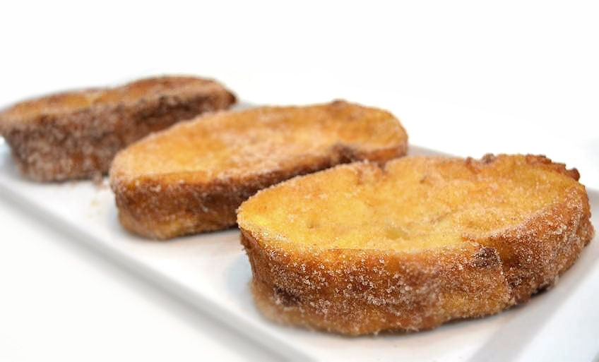

Recetas de cocina
Torrijas

Lista de ingredientes:
- Pan para torrijas en rebanadas
- 1 L Leche
- 100 g Azúcar
- 1 unidad Canela en rama
- 1 L Aceite de oliva
- 2 Huevos
- Azúcar para rebozar
- Canela molida para rebozar
- Ralladura de limón
Pasos a seguir:
- En un cacito ponemos el litro de leche, el azúcar, la rama de canela y la piel del limón (sin nada de la parte blanca). Calentamos y cuando comience a hervir lo retiramos del fuego, tapamos y esperamos a que se enfríe antes de empapar las rebanadas de pan ya que si no se reblandecen demasiado.
- Dejamos el pan en remojo durante una hora o hasta que absorba toda la leche y no se vean restos. Batimos los huevos en un recipiente hondo, pasamos las rebanadas de pan por ambas caras y las freímos en abundante aceite de oliva bien caliente, volteando para que se doren por las dos caras. Las escurrimos bien y las ponemos en papel secante para quitar el exceso de aceite.
- Mezclamos 100 g de azúcar con dos cucharaditas de canela molida (opcional) y rebozamos las torrijas en la mezcla. Servimos con fruta fresca, espolvoreamos con nueces picadas o tal cual y sin florituras. Como más nos guste. Eso sí, mejor calientes y recién hechas que es su momento óptimo.
Ir a la receta original